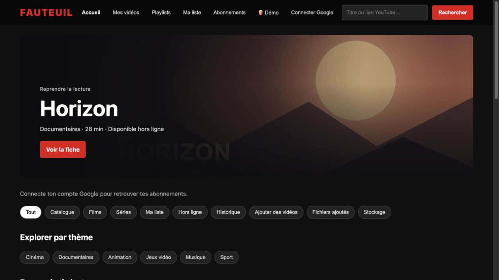

Local videos
Add your existing files in place, browse episodes by season and resume playback from your last position.
Bring your films, series and YouTube playlists together in Fauteuil. Resume where you left off and keep selected videos for offline viewing.
Download Fauteuil for macOSmacOS 15 or later · Apple Silicon and Intel

Add your existing files in place, browse episodes by season and resume playback from your last position.
Import public playlists by URL. Configure Google to browse your subscriptions and personal playlists.
Save selected videos for later. Start watching while a video downloads when its format supports progressive playback.
Unzip the download, open Fauteuil.app and choose Installer dans Applications. If prompted, install the runtime from within the app. This step needs internet access and downloads around 145 MB.
Local playback works without a Google account. For macOS 13 or 14, use Fauteuil 1.3.1 and install its tools manually.

Choose the right macOS release, install Fauteuil and its runtime, then test playback with a local video.
Import a public YouTube playlist into Fauteuil, save selected videos and check they are ready for offline viewing on Mac.
Add existing video files to Fauteuil, organize episodes into seasons and resume playback without duplicating your media.